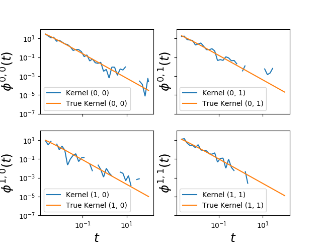

This Hawkes learner based on conditional laws
(tick.inference.HawkesConditionalLaw) is able to fit Hawkes power law
kernels commonly found in finance applications.
It has been introduced in the following paper:
Bacry, E., & Muzy, J. F. (2014). Second order statistics characterization of Hawkes processes and non-parametric estimation. arXiv preprint arXiv:1401.0903.
Python source code: plot_hawkes_conditional_law.py
import numpy as np
import matplotlib.pyplot as plt
from tick.inference import HawkesConditionalLaw
from tick.plot import plot_hawkes_kernels
from tick.simulation import SimuHawkes, HawkesKernelPowerLaw
multiplier = np.array([0.012, 0.008, 0.004, 0.005])
cutoff = 0.0005
exponent = 1.3
support = 2000
hawkes = SimuHawkes(
kernels=[[HawkesKernelPowerLaw(multiplier[0], cutoff, exponent, support),
HawkesKernelPowerLaw(multiplier[1], cutoff, exponent, support)],
[HawkesKernelPowerLaw(multiplier[2], cutoff, exponent, support),
HawkesKernelPowerLaw(multiplier[3], cutoff, exponent, support)]],
baseline=[0.05, 0.05], seed=382, verbose=False)
hawkes.end_time = 50000
hawkes.simulate()
e = HawkesConditionalLaw(claw_method="log",
delta_lag=0.1, min_lag=0.002, max_lag=100,
quad_method="log",
n_quad=50, min_support=0.002, max_support=support,
n_threads=-1)
e.incremental_fit(hawkes.timestamps)
e.compute()
fig = plot_hawkes_kernels(e, log_scale=True, hawkes=hawkes, show=False,
min_support=0.002, support=100)
for ax in fig.axes:
ax.legend(loc=3)
ax.set_ylim([1e-7, 1e2])
plt.show()
Total running time of the example: 5.23 seconds ( 0 minutes 5.23 seconds)